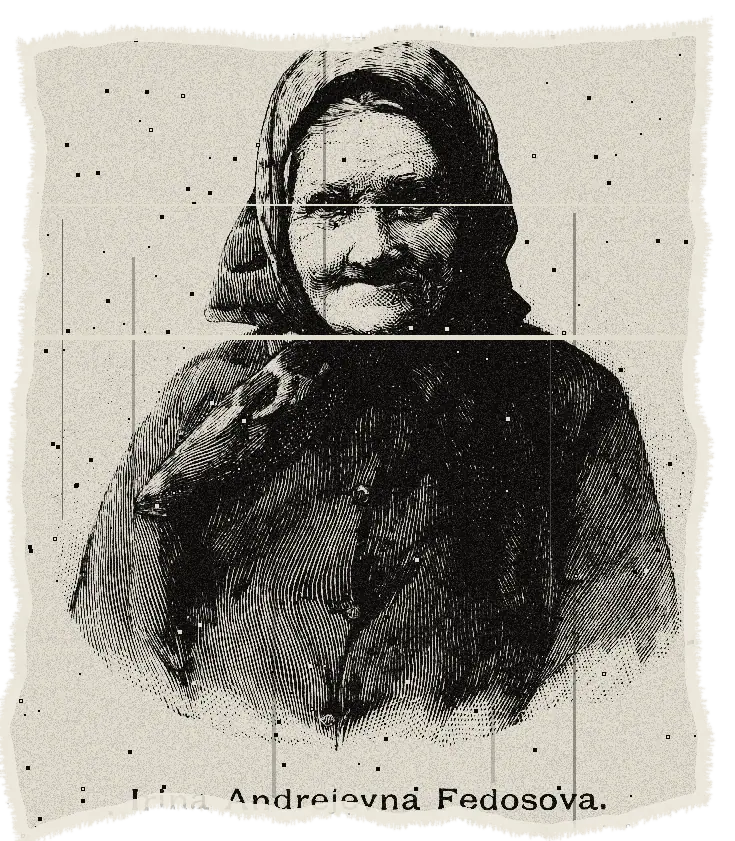
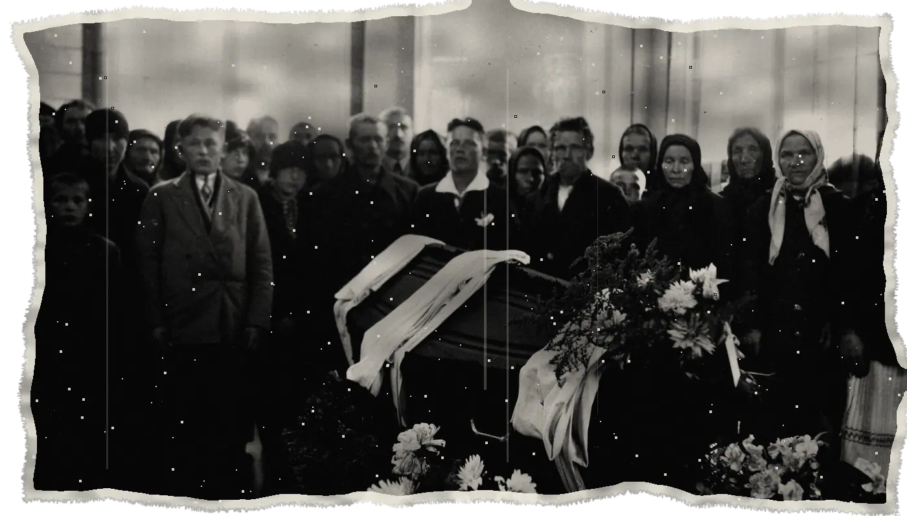
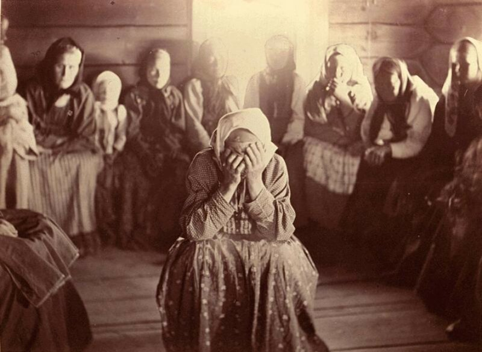
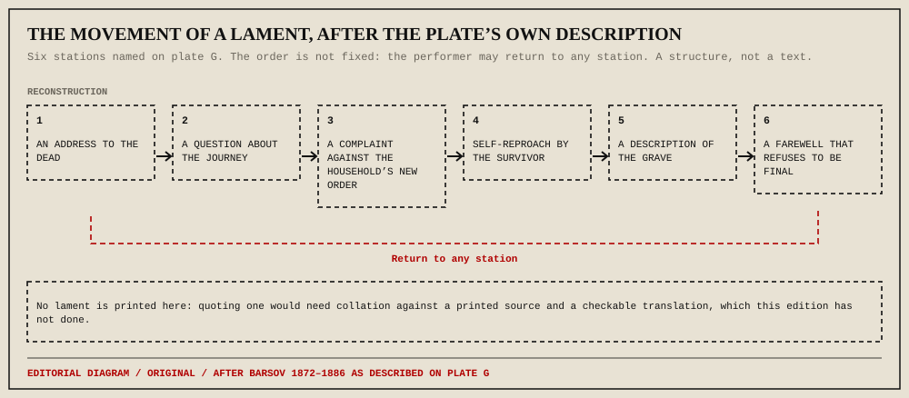
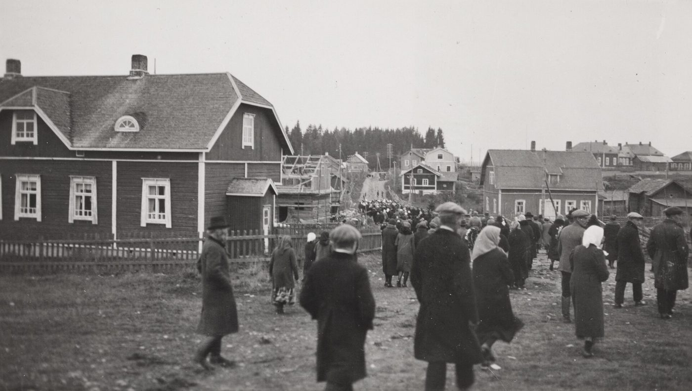
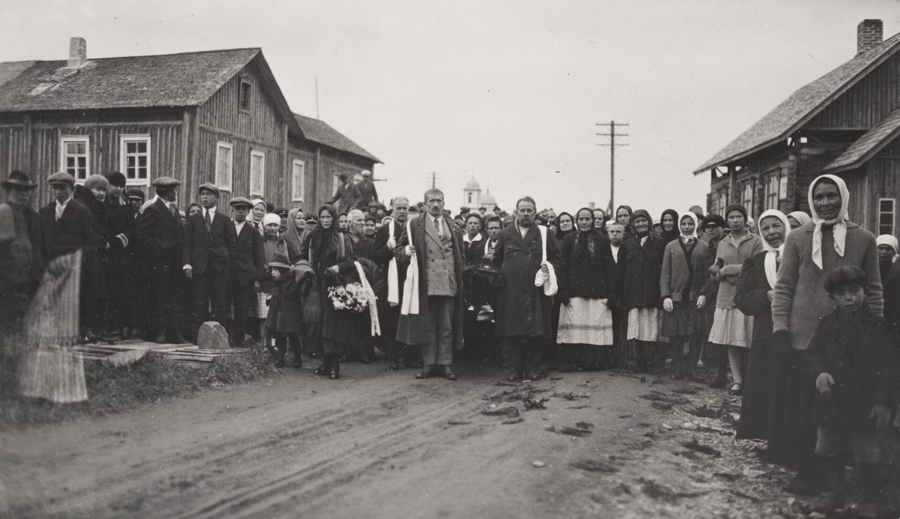
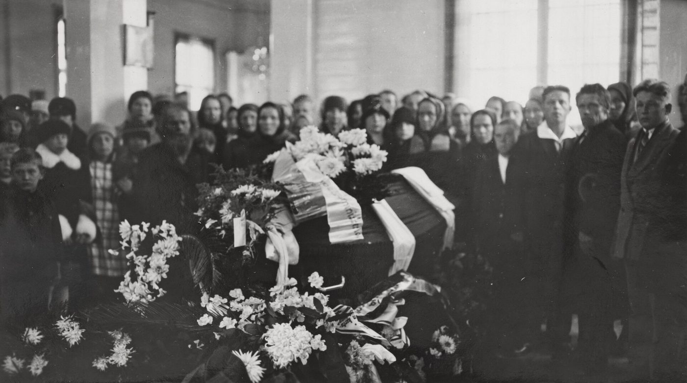

VOL. I · PLATE G · 07 / 09
THE VOICE
Lament, euphemism, and the grammar of address
The dead are spoken to. The grammar of that address is one of the most precisely recorded things in Russian ethnography — and one of the least often quoted accurately.
Recorded 1872–1886, and later · Olonets province (Karelia) and the Russian North · Folk lament; Orthodox liturgical language

G / 03
The second person
Collation of the primary lament corpus (Barsov 1872, part I; Kuznetsova and Kovyrshina 2000, pp. 153–160) confirms that Russian funerary language keeps the dead strictly in the second person singular (ty) and in the present tense for the entire duration of the rites. The performer invokes the deceased through kin epithets—'my master', 'my born one', 'my bright light' (sudaruška ty moi, svet-nadeža ty moia)—and poses continuous rhetorical questions ('To whom do you leave us?', 'Whither are you preparing to go?') that demand an answer. Ordinary euphemisms for death (ušel—'he has gone'; ne stalo—'he is no more') are suspended: the lament is constructed as an intense dramatic dialogue that refuses to acknowledge the silence of the corpse until the grave is filled. Third-person grammatical forms occur only when the lamenter breaks the direct address to instruct gravediggers, remonstrate with onlookers, or petition God.
| Term | Gloss | Register | Used here |
|---|---|---|---|
| pokoinik | the deceased, the late | neutral, slightly formal | as a noun for the dead |
| usopshii | the one who has fallen asleep | liturgical | church context only |
| konchina | death, passing (of a person) | literary / elevated | as a written register |
| prestavlenie | falling asleep, departure | theological | doctrine only |
| pominki | memorial meal, commemoration | everyday | the meal and the act |
| sorokoviny | the fortieth day | everyday / regional | the fortieth-day rite |
| Radonitsa | spring day of commemoration | church / regional | parish calendar |
| zalozhnyi | ‘pledged’, unclean dead | scholarly term | Zelenin’s category, flagged |
| kladbishche | cemetery | neutral | the modern institution |
| pogost | churchyard; village with a church and graveyard | historical | the pre-modern form |
| golubets | roofed grave-cross | regional / descriptive | one grave type |
| smertnoe | clothing kept for death | regional | the death bundle |


G / VOLOGDA
A funeral day in laments, as Vologda performers describe it
Elena Iugai’s study draws on funeral laments of the eastern part of Vologda province, published by B. Efimenkova (1980) and by Iugai herself (2011), and begins with a warning: the Olonets laments of Barsov’s volumes are not representative of all Russian laments, because his informants Fedosova, Bogdanova and Pashkova were not ordinary lament-singers, their texts being very long and rich; a fair picture needs a large corpus of smaller texts, such as those from the Novgorod region (Berdyaeva 2015) and the South Urals (Rozhkova and Moiseeva 2008) (p. 166). She says that in pre-revolutionary Russia laments were an obligatory part of the funeral, with different types for different stages, and that the genre has since lost that role (p. 167).
The performers’ own names for laments mark moments: ‘when he is lying on the bench’, ‘when they carry the coffin’, ‘in the cemetery’, the last covering laments at the digging of the grave, at the anniversary and on visits to the cemetery on Trinity Saturday. On the day of burial, as she describes it, relatives lament in the house of the dead while guests lament on their way to it. The text narrates a search: the performer wakes, washes, looks for the dead person in the yard and the house, finds him in the red corner and reproaches his silence. When the helpers close the coffin she laments again, asking them not to. The full ‘parting in the house’ can run to hundreds of lines. On the way to the cemetery the dead says farewell to the house, the street, the village, the forests and the whole world; at the cemetery the lament soothes the dead, whose relatives are waiting for him; a last lament is sung on the way back (pp. 167–168).
Informants separate these from commemoration laments, which are more symbolic, less improvised and closer to lyrical songs, and which can be sung within the first 39 days (on the ninth or twentieth), on the fortieth day, at the anniversary, on feast days or on any day. The soul is thought to come to the commemoration feast: in some Vologda villages a table is laid for the souls and a clean towel hung out for them to wash their hands, and a lament invites them. In the west of the province there is a lament inviting the dead to the bath; in the east the bath is prepared but no lament belongs to it. Today, she says, a performer often knows only one short lament, built from the traditional formulas, and uses it both at funerals and at commemorations (pp. 168–169). This is one author’s description of one region; it does not say how widely the same sequence held elsewhere.
Barsov’s own note on the funeral dinner shows the laments as an order of performance. In the Olonets passage that puts the dead person’s table on the stove (Ladeinopol district), the lamenters begin at the first dish, first lamenting to the priest and the clergy, then to relatives, neighbours and outsiders present; they walk through the house, bow to the four corners and lament at every place where the dead person sat, lay and walked, then go out to the barn, the yard and, if near, the fields. The sequence repeats after the second and third dishes, the lamenters change after each, and the priest is seen off with tears in the belief that the dead goes back to the cemetery with him (1872, p. 309). Barsov’s introduction also records what church and state made of lamenting. It quotes the Stoglav Council of 1551, which complained that on Trinity Saturday men and women at the graves wept with great shouting and, when buffoons and musicians began to play, stopped weeping to dance and sing ‘satanic songs’, and told priests to turn their flocks from these ‘pagan customs’ (ch. 4, q. 23); and a decree of 1715 in which Peter I, on the death of Tsaritsa Marfa Matveevna, ordered that no one should give such indecent howling over her or over any other dead person. Barsov says the decree touched the Westernised upper layer and had no influence on the mass of the people, and adds that Peter’s own coffin was lamented in a folk lament (pp. VIII–IX). Both are quoted at second hand, and ‘pagan’ is the Council’s word, not a finding.
Вопленица по преимуществу является истолковательницей семейнаго горя
The performer
Fedosova, and the question of the author
Most of the laments in Barsov’s volumes were recorded from one woman, Irina Andreevna Fedosova (1827–1899), a lamenter from the Zaonezhye north of Lake Onega; a few were added later from her by O. Kh. Agreneva-Slavianskaia. Kuznetsova and Kovyrshina place her birth in a village of the Vyrozero district (née Yulina) and her later life at Kuzarand; her melodies were noted between 1886 and 1895 by Agreneva-Slavianskaia, S. G. Rybakov and N. A. Rimsky-Korsakov, and a phonograph recording of 1896 by Yu. I. Blok was transcribed and published much later. Reference works disagree on her birth year, 1827 or 1831, and this atlas follows the 1827 given in the scholarly articles read. The consequence for the plate is concrete. A genre described above as formulaic and communal reaches us largely through a single, exceptionally skilled voice, recorded by outsiders, in a setting that was not a funeral. Philologists have debated how much of the printed text is the tradition and how much is the performer. The sources read here do not allow the atlas to settle that, and it does not.
Fedosova was not the only named voice. In the register of performers that closes the first volume, Barsov lists five women, and the lament printed there as No. XI comes from a peasant woman of the village of Tverdilovo, Kalyazin uyezd, Tver province, Klavdiya Momokova, who by his account learned to lament in her own village while still unmarried and was living in Moscow when he wrote. Another, Anna Perventseva, was a priest’s daughter who learned at the churchyard on Sundays and feast days; a third, Marya Fedorova of Kargopol, a deacon’s daughter, learned from an old lamenter who had taken shelter in her parents’ house. The portraits are Barsov’s own, selective and at times unfriendly, and give no recording dates; they show that the collection rests on named women of different standing, not on an anonymous “people”.





Text
A lament for a sister
Плачъ по сестрѣ
Original
English translation
This is one of the few complete laments in Barsov's first volume. It was recorded in Kalyazin uyezd, Tver province, not in the Olonets North, and printed as No. XI. Barsov's register of performers (pp. 326–327) identifies the performer as Klavdiya Momokova, a peasant of Selo Tverdilovo; she learned to lament in the village as a girl and was living in Moscow when Barsov wrote. The text is short enough to print in full.
The sister's lament moves from the dead woman's departure to «unknown guests» to the emptiness of the house, the survivor's loss of a «secret word» and «protection», and then to the invocation of wind, earth, coffin lid and shroud. The request that the dead sister rise and speak is a conventional motif. The closing line asks not for resurrection but for the grief to be shortened. The text is printed in the original pre-1918 orthography; line breaks and repetitions are retained. After the last line Barsov prints a footnote with a variant of about twenty lines for the passage on the winds, the earth and the shroud; the variant is not reproduced here.
- сурядилася / сподобилась
- Arrayed herself, made herself ready; the verbs belong to the ritual language of departure.
- теремъ
- The upper room or tower of a house; here the whole household.
- заступушка
- Protection, intercession; the sister was the mourner's defender.
- маяться
- To languish, to suffer without relief.
Source E. V. Barsov, Prichitaniya Severnogo kraia, vol. 1 (Moscow, 1872), pp. 162–164, no. XI, lines 1–42. · open source
Rights Public domain. Barsov died in 1917; the volume was published in 1872. Public domain in Russia and in the United States. The transcription was checked line by line against the Internet Archive scan, pp. 162–164.
Apparatus sources · related plates · terms
Sources for this plate
- barsov1872 Barsov, Elpidifor Vasil’evich — Prichitaniia Severnogo kraia (1872–1886)
- kuznetsova-kovyrshina2000 Kuznetsova, V. P.; Kovyrshina, Yu. — I. A. Fedosova i vyrozerskaia shkola prichital’shchits (I. A. Fedosova and the Vyrozero school of lamenters) (2000)
- tolstoy1995 Tolstoy, Nikita I. (ed.); Tolstaia, Svetlana M. (ed., vol. 5) — Slavianskie drevnosti: Etnolingvisticheskii slovar’ (1995–2012)
- ivanits1989 Ivanits, Linda J. — Russian Folk Belief (1989)
- loiter2017 Loiter, S. M. — Irina Fedosova v issledovaniyakh K. V. Chistova (Irina Fedosova in the work of K. V. Chistov) (2017)
- iugai-letter Iugai, Elena — “From This Place You Cannot Hear Speech. From This Place You Cannot Receive a Letter”: The Letter-Message in Russian Funeral Lamentations (2016)
URLs, access dates and limitations are in the bibliography.